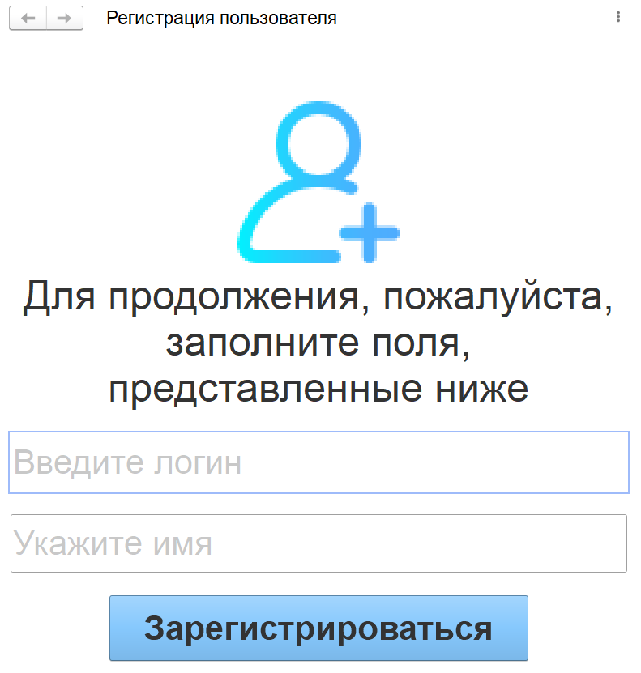

Описание программы
Программа "Основы WEB-программирования на JavaScript" состоит из 4 модулей по 36 ак. часов. Каждый модуль программы является логическим продолжением предыдущего, рекомендуем проходить их последовательно друг за другом. Главными героями данного курса являются Маша и Медведь. Машин интерес к окружающему миру не угасает никогда, но, к сожалению, в округе она уже все изучила и все книги прочитала, поэтому стала искать новый источник новостей и знаний. Мудрый Медведь предложил ей создать социальную сеть для общения с другими людьми, но Маша не знала, что такое сайт и как его сделать. Тогда Медведь предложил свою помощь. Так и началась эта история… 1 МОДУЛЬ. "ПЕРВЫЕ ШАГИ" В рамках первого модуля Медведь поможет Маше (и заодно вам) получить базовые навыки разработки сайтов. Мы изучим такие языки, как HTML, CSS, JavaScript и PHP, создадим свои первые страницы на каждом из них. |
2 МОДУЛЬ. "ПЛАНИРОВЩИК" Во втором модуле после изучения базы веб-разработки становится понятно, что без четкого плана действий достаточно сложно организовать свою деятельность, ведь задач для создания сайта весьма много, особенно при работе в команде. Благодаря полученным знаниям можно создать простейший сайт-планер, но его функционала будет недостаточно, чтобы охватить абсолютно все. Тогда на помощь приходит 1С. На данной платформе создается полноценный планировщик, способный помочь грамотно распределить наше время. |
К третьему модулю Маша загордилась. Шутка ли: она много чего уже знает и умеет. Про социальную сеть заговорила вся округа, всем нравилась идея, все ждали ее проект. Только мудрый Медведь понимал, что от идеи до реализации – дорога длинная. Нашим героям пора приступать к разработке социальной сети: они создадут структуру сайта, познакомятся с системой аутентификации пользователя с последующей его авторизацией и настроят свою базу для хранения данных сети. |
Маша и Медведь были довольны своей работой и пригласили своих друзей в новенькую, еще пахнущую свежим кодом сеть. Увы, события развивались традиционно: всем сайт поначалу понравился, но через несколько дней уже надоел. Главные герои решили вернуть интерес пользователей, расширив возможности площадки с помощью мультимедиа и интернет-магазина для продажи Машиного фирменного варенья. Пришлось заниматься вопросами интеграции, сидеть над клавиатурой ночами и получилась… конфетка! Казалось бы – все, цель достигнута. Но Маше так понравилась разработка, что она пошла работать в ИТ. Впрочем, об этом в следующих курсах. |
Добро пожаловать во второй модуль программы "Основы WEB-программирования на JavaScript". В рамках данного блока нам предстоит заняться тайм-менеджментом – искусством планирования времени. Мы создадим и настроим специальную базу для хранения и анализа информации о личном времени. В отличие от предыдущего этапа, где было лишь знакомство с различными языками программирования, мы займемся разработкой настоящего комплексного приложения.
В результате каждый из вас научится программировать отчеты, контролировать поставленные задачи и углубится в синтаксис платформы "1С:Предприятие 8.3" и языка JavaScript.
Перед началом обучения каждый ученик должен завершить прохождение модуля 1, на котором:
Если все пункты соблюдены, то можно приступать к обучению!
Изучим логику программы, которая должна получиться в результате: задача каждого ученика – научиться грамотно распределять свои обязанности и личные дела. Каждый сможет самостоятельно разработать функционал, благодаря которому приобретет комплексные знания по программированию. В итоге на выходе получится удобное мини-приложение "Планировщик".
Для реализации этой задумки нам потребуется выполнить ряд задач:
Рис. 1. Веб-планировщик
Рис. 2. Окно авторизации

Рис. 3. Форма регистрации
Рис. 4. Форма начального экрана
Рис. 5. Доска расписания
Рис. 6. Отчет в виде таблица
Рис. 7. Диаграмма дел
Рис. 8. Напоминание